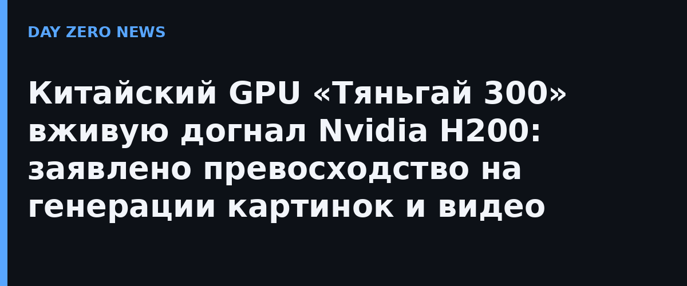

Компания Iluvatar CoreX (Шанхай, биржевой тикер 9903.HK) провела первую живую демонстрацию своего флагманского GPU Tiangai 300, представленного ещё в июле на Всемирной конференции искусственного интеллекта WAIC-2026. По заявлению компании, это первый китайский универсальный GPU, чья измеренная производительность вышла на уровень Nvidia H200, а в сложных мультимодальных задачах — генерации изображений и видео по текстовому описанию — чип даже опережает чужой ускоритель. В обзорах фигурирует оценка примерно в 1,05 результата H200.
Свою линейку компания строит на архитектуре SIMT с поддержкой скалярных, векторных и тензорных вычислений. Заявленные характеристики: эффективность механизма внимания (Attention) выше 90%, производительность на контексте 64k токенов на 10% выше решений на архитектуре Hopper, средняя эффективность моделей MoE тоже выше на 10%, задержка первого токена снижена примерно на 20%, средняя задержка коммуникаций между картами — на 13%, а производительность стадии декодирования выросла на 10%. Дорожная карта рассчитана до 2027 года: следующее поколение архитектура должно конкурировать с Blackwell, а замыкающая ступень — с платформой Nvidia Rubin.
Регуляторы КНР отказались от закупок Nvidia H200, и местным дата-центрам приходится пересаживаться на отечественное железо. Iluvatar CoreX — одна из немногих китайских GPU-компаний с листингом на бирже: выход на основную площадку Гонконга в январе 2026 года принёс ей оценку около 46 млрд гонконгских долларов, а в августе её включили в индекс Hang Seng Tech — первым и пока единственным представителем GPU-отрасли. Важная оговорка: все сравнения с H200 — замеры самого производителя, независимых тестов на момент публикации не публиковалось.
Догонять запрещённое железо приходится всему Китаю: по данным компании, уже свыше 52 тысяч отгруженных ускорителей и выручка 324 млн юаней за первое полугодие 2025 года. Если заявления подтвердятся внешними бенчмарками, разрыв между китайскими и мировыми ИИ-ускорителями сократится с нескольких поколений до одного — а рынок Nvidia в Китае и без того ужимается с каждым новым экспортным ограничением.